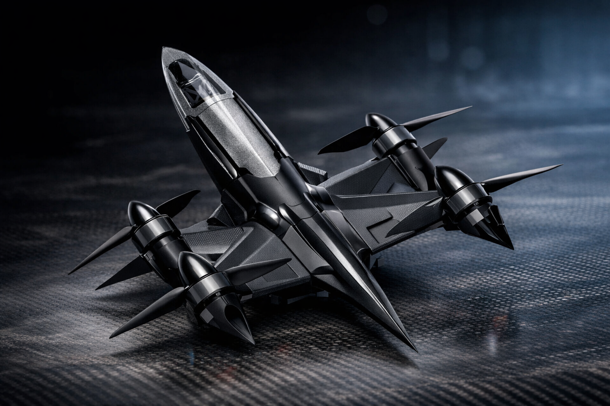
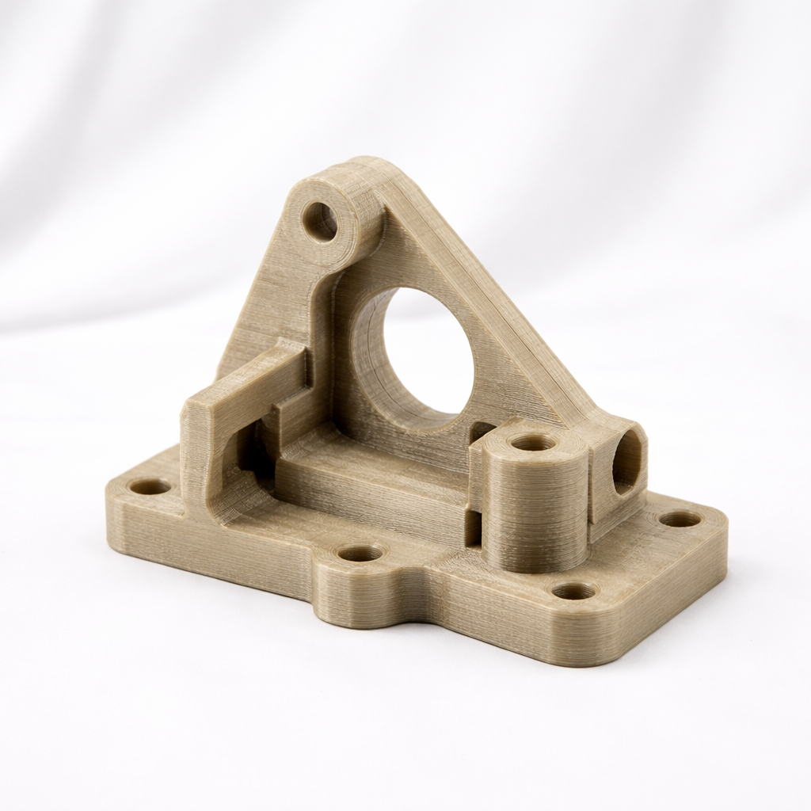
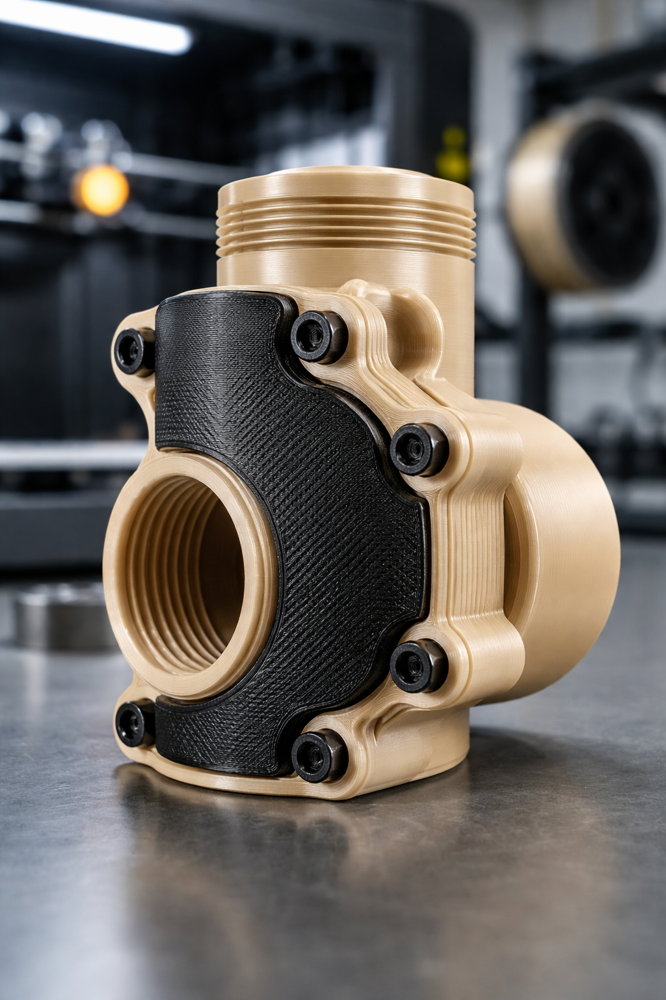
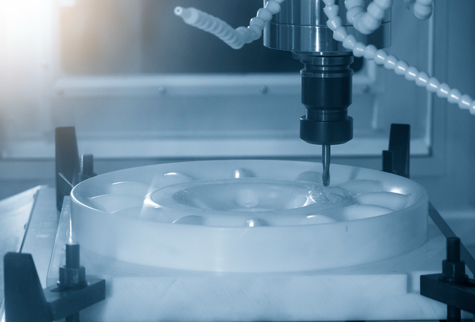
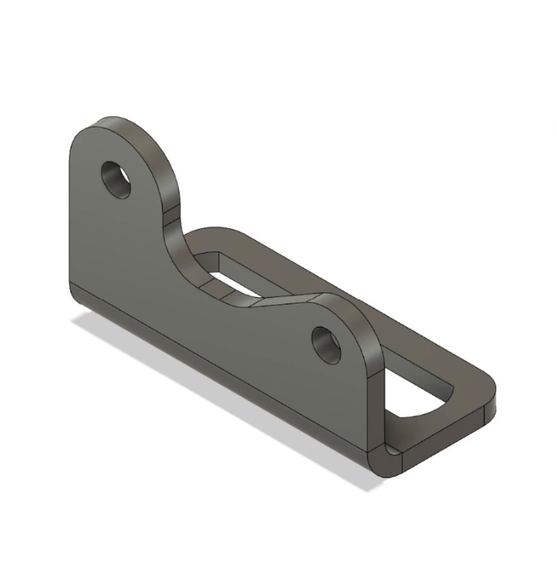
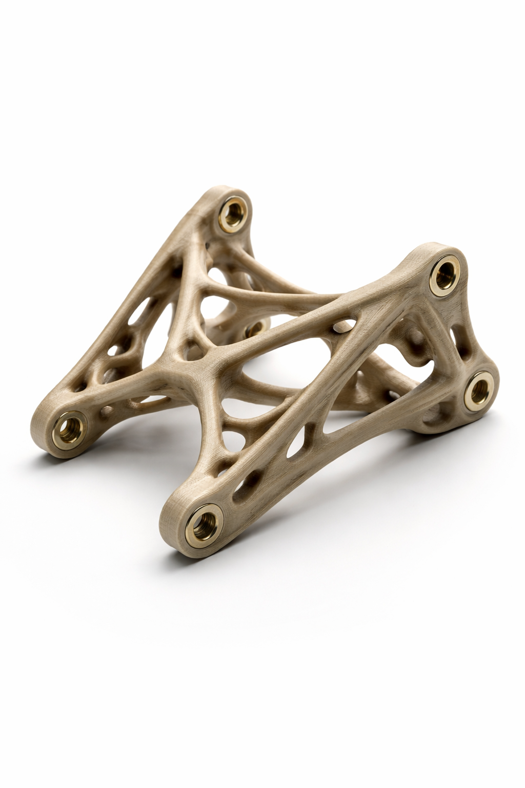

Produkter & Tjenester
Produkter, additiv produksjon, maskinering, CAD og engineering – samlet i ett løp.
Produkter

Langdistanse inspeksjonsplattform
En lett og effektiv plattform utviklet for inspeksjon, kartlegging og datainnsamling over store avstander.
- Bruksområde: inspeksjon og kartlegging
- Lang rekkevidde og effektiv utforming
- Styring: nom og pilot

Høyhastighets inspeksjonsplattform
En kompakt plattform utviklet for raske oppdrag innen inspeksjon, observasjon og teknisk datainnhenting.
- Bruksområde: raske inspeksjonsoppdrag
- Aerodynamisk design og høy effektivitet
- Styring: nom og pilot
Produksjon og Engineering

Additive manufacturing
Store funksjonelle deler i polymerer som tåler varme, kjemi og mekanisk last. Vi hjelper også med materialvalg og prosess for å sikre riktig ytelse og levetid.
- Store geometrier og tykke vegger (LFAM/FFF)
- HPP-materialer: PEEK, PEKK, PEI (ULTEM), TPI
- One-off komponenter og småserier – print alene eller print + maskinering

Multi Material Printing
Vi tilbyr 3D-printede komponenter med flere polymerer i samme print, slik at ulike soner i delen kan få ulike egenskaper.
- Flere polymerer i samme komponent
- Tilpassede egenskaper i ulike soner
- Mulighet for mer funksjonelle og integrerte deler

Maskinering
Vi maskinerer kritiske flater, hull og innfestinger slik at du får riktige toleranser der det trengs.
- Planhet, tetningsflater og presisjonshull
- Bearbeiding av store emner
- Kombi: print + maskinering

CAD design
Vi hjelper deg med CAD fra konsept til produksjonsklar modell – tilpasset additive manufacturing og etterarbeid.
- Bistand med design for printing
- Optimalisering av geometri
- Design for produksjon

Engineering
Vi støtter utvikling med topologioptimalisering og analyser for å redusere vekt, øke stivhet og forbedre ytelse.
- Vi bistår med topologioptimalisering for print
- Strukturanalyse av deler
- Styrkekrav og vekt